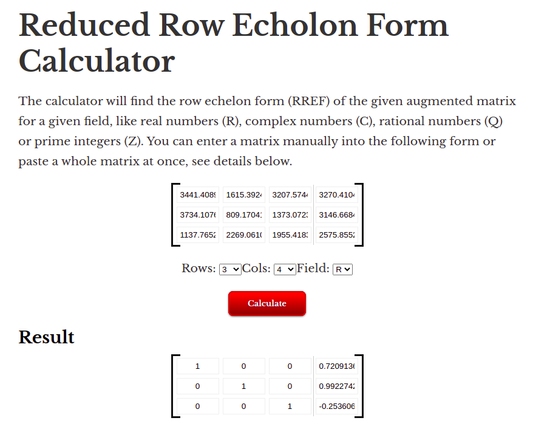
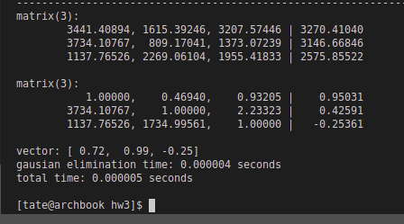
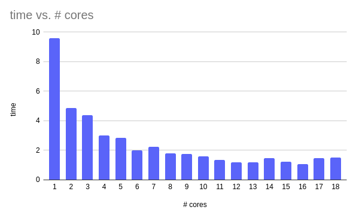

Homework assignment 3
Compile
Use make all to compile the program to a MPI binary. The serial reference implementation is also included but not relevant to the assginment
Binary Usage
mpirun -n <slots> ./gauss_mpi <N> [random seed]
- N: Dimension of the matricies
- random seed: seed for populating the matricies
- slots: number of threads to use
Additionally the makefile includes targets for the tests required in the assignment
Run Tests
To get an idea of the performance characteristics you can use make test_assgined (1,2,4,8,12,16) or make test_1_22 (1-22). Otherwise you can use the produced binary directly as described above.
Notice on rewrite
Because the number of changes involved for this assignment were relatively signficant (changing structures and such)
Optimizations
- The provided serial algorithm performs the elimination operation on the entire row despite elements not in the upper triangular matrix being known to result in zeros or being used in the back-substitution phase. Instead I simply left those values to what they were initialized so that we don't have to waste resources on them
- Minor changes to improve cache efficiency
- I normalized the diagonal pivots to 1 before sending the row to the other ranks such as to reduce the amount of expensive divisions. It's possible that like in hw2 this didn't provide a meaningful improvement in performance however I feel that the threads would have to synchronize over this anyway so there would be a delay regardless unlike with the shared memory progra
- This part was optimized by first finding multiplying the entire row by the reciporocal of the pivot as this is more efficient than division
Algorithm description
- The algorithm is similar to the provided serial algorithm
- for each diagonal element - e
- use threads to apply elementary row operations on the rows below it that would eliminate the values in the column below e
- for each row r, below e's row in it's own thread
- apply subtract a multiple of e's row from r such that it would eliminate the element in the column below e in r
- don't change the elements in or left of e's column
- synchronize all threads
Verification of Correctness
Although the algorithm very closely follows what I was taught in linear algebra last semester, I did verify the results.
- Consistent results were confirmed by running with the same seed several times with various different core counts
- Notably difficult was finding faulty behavior when the work was not evenly divisible by the number of ranks
- Results were checked via an online RREF calculator


Algorithm Performance
As shown in the below image, the parallelism priveds a noticable improvement in performance, however there are dimishing returns, giving the algorithm sublinear scaling.

|slots | time |
|-------|-----------|
|1 | 9.601567 |
|2 | 4.850437 |
|3 | 4.389371 |
|4 | 2.987821 |
|5 | 2.828795 |
|6 | 1.980991 |
|7 | 2.222434 |
|8 | 1.793964 |
|9 | 1.771634 |
|10 | 1.609408 |
|11 | 1.341887 |
|12 | 1.18755 |
|13 | 1.175471 |
|14 | 1.488021 |
|15 | 1.223894 |
|16 | 1.069273 |
|17 | 1.457165 |
|18 | 1.494384 |
|19 | 1.723393 |
|20 | 1.561171 |
|21 | 1.267043 |
|22 | 1.188439 |